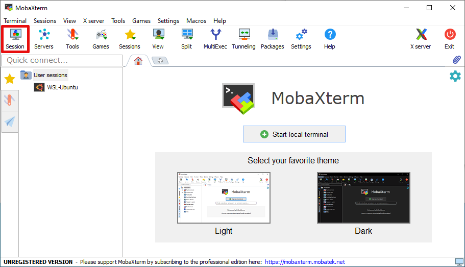
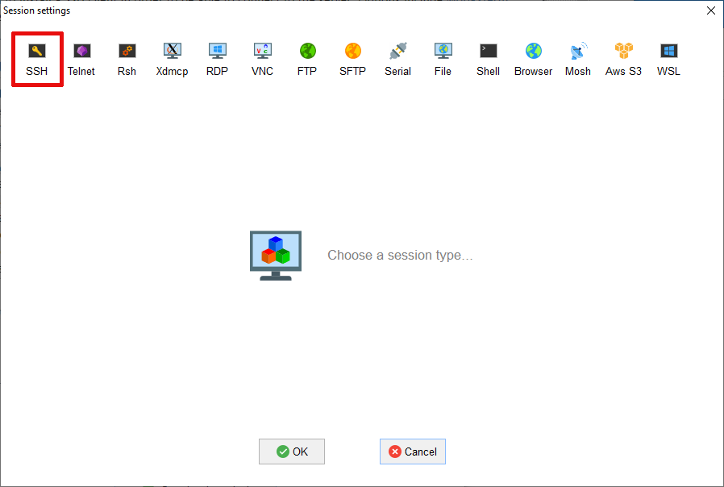
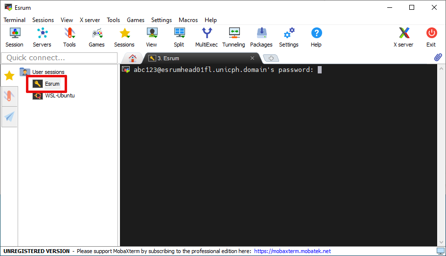
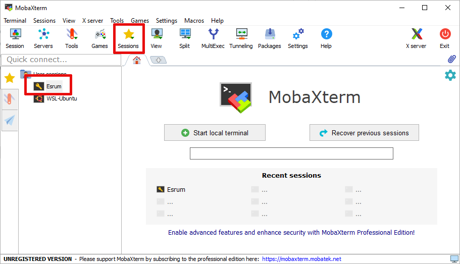

4.2. Connecting to the cluster¶
If you have not already applied for and been granted access to the cluster, then please see the Applying for access page before continuing.
The cluster's is accessible via SSH at esrumhead01fl.unicph.domain.
This is the Esrum "head" node, which serves as the entry-point for the
cluster and which gives you access to the job management system used for
running software (see Running jobs using Slurm)
To connect to the cluster you will typically need to be connected to the KU VPN. For information about connecting to the VPN, see the support pages on KUNet in Danish and English.
4.2.1. Connecting on Windows¶
Windows users will need to install a SSH client in order to be able to connect to the server. Options include MobaXterm, Putty, and Windows Subsystem for Linux (WSL), and much more. The following demonstrates how to setup MobaXterm. Please refer to the Connecting On Linux or OSX section if using WSL.
4.2.1.1. Configuring MobaXterm¶
Install and open MobaXterm.
Click left-most
Sessionbutton on the toolbar.Click on the left-most
SSHbutton on the resultingSession settingsdialogUnder
Basic SSH settingsWrite
esrumhead01fl.unicph.domainunderRemote HostClick the checkbox next to
Specify usernameand enter your KU username (in the formabc123)
Click on the
Bookmark settingstab andWrite
Esrumor a name you prefer underSession NameOptionally click the
Create a desktop shortcut to this sessionbutton. This will create a shortcut on your desktop that connects to Esrum.
Click OK and you should connect to the server. The first time you connect a new server you if you want to proceed. As this is the first time we are connecting to Esrum, simply press Accept:

Warning
If you receive this question again later, then stop and double-check that you are connected via the KU VPN, as the message could indicate that you are not actually connecting to Esrum!
You should now be able to login to the server:
For security reasons we recommend that you decline if asked if you want to save your password.
To connect again another time, either use the desktop shortcut (if you
created it), double click on Esrum in the list of sessions on the
left side of MobaXterm, or select Esrum from the list that appears
when clicking on the middle Sessions button on the main menu.

4.2.2. Connecting on Linux or OSX¶
Linux and OSX users can connect to the cluster using the following
terminal command, replacing abc123 with your KU username:
$ ssh abc123@esrumhead01fl.unicph.domain

It is recommended to add an entry for the cluster to your
.ssh/config file, replacing abc123 with your KU username:
$ cat ~/.ssh/config
Host esrum esrumhead01fl esrumhead01fl.unicph.domain
HostName esrumhead01fl.unicph.domain
User abc123
This allows you connect to the server using the names esrum,
esrumhead01fl, or esrumhead01fl.unicph.domain, and without
having to specify your username:
$ ssh esrum
abc123@esrumhead01fl.unicph.domain's password:
__
/ \
_\__/ Welcome to esrumhead01fl
(_) University of Copenhagen
_____O______________________________________
Supported by UNICPH IT it.ku.dk/english
Last login: Fri Oct 13 01:35:00 1980 from 127.0.0.1
$
Note
Note that the cluster does not support authentication through a public SSH key and that you therefore have to enter your password when connecting to the server.
4.2.3. Troubleshooting¶
If have not already been granted access to the server, then please see the Applying for access page before continuing!
4.2.3.1. Timeout while connecting to the cluster¶
You may experience timeout errors when you attempt to connect to the server:

Firstly verify that you are correctly connected to the KU network:
You must either use a wired connection while physically at CBMR.
Or you must connect via the KU VPN.
It is not possible to connect to using WIFI at CBMR nor is it possible to from outside of CBMR without the use of the VPN. See the official VPN documentation in Danish or English for more information.
If neither using a wired connection nor connecting the the KU VPN fixes the problem, you may need to create a support ticket to have KU IT permit you to connect to the server.
Login to the KU IT Serviceportal.
Click the
Create Ticketbutton.Select the
Research ITcategory.Then select the
Research Applications and Servicessubcategory.Finally, select
Consultancy and Support.Write something like "SSH connection times out when attempting to connect to esrumhead01fl.unicph.domain" in the "Please describe" text-box and describe the steps you have taken to try to fix this problem: Tried wired connection at CBMR, tried VPN, etc.
Write "esrumhead01fl.unicph.domain" in the System name text-box.
Click the
Add to cartbutton.Click the
SUBMIT ORDERbutton.